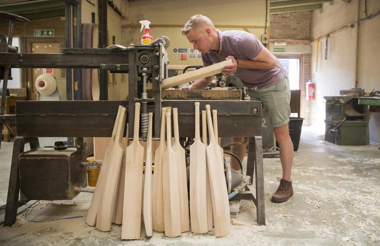

We are based in Lancashire on 3 Redwood Road. We having creating different verity of bats from Teenagers to Pro Athletes. Wood on our bats are imported from many different coutries like India, Zimbabwe, Pakistan and South Africa. We have a great team of people who are pessionate about their job and work hard day and night to build optimal bats for you.  As you can see in this image how the bats are getting build one by one, they are fully handmade and they are built with attention and detail. We also provide 2 year warranty for repairment on our bats. So if you find any issue the yourn bat you can contact us through our contact us page and we will get back to you within 48hrs.